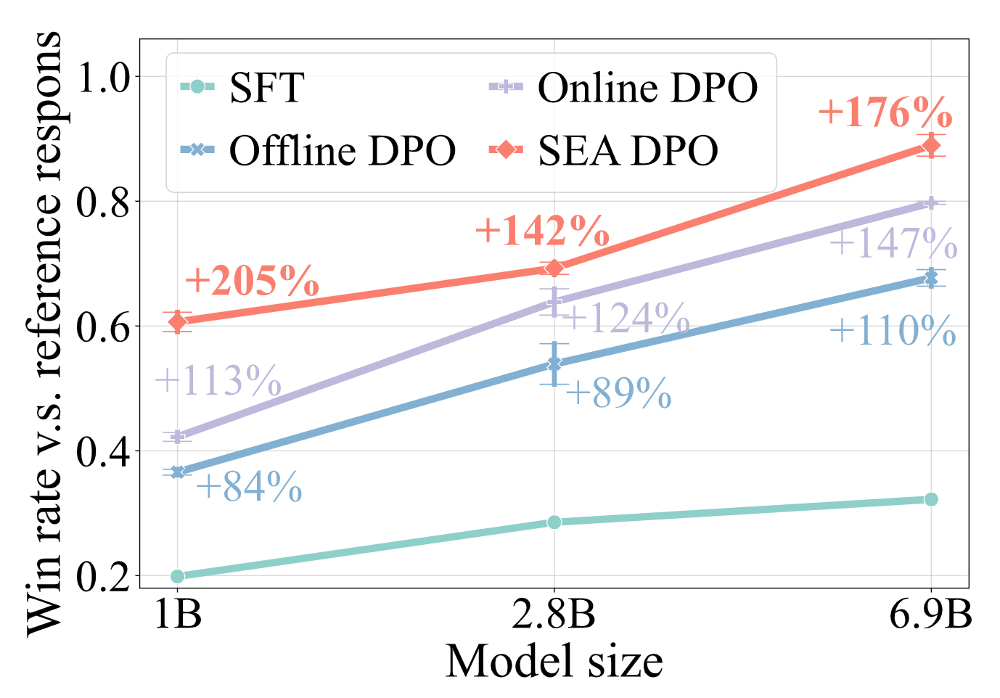
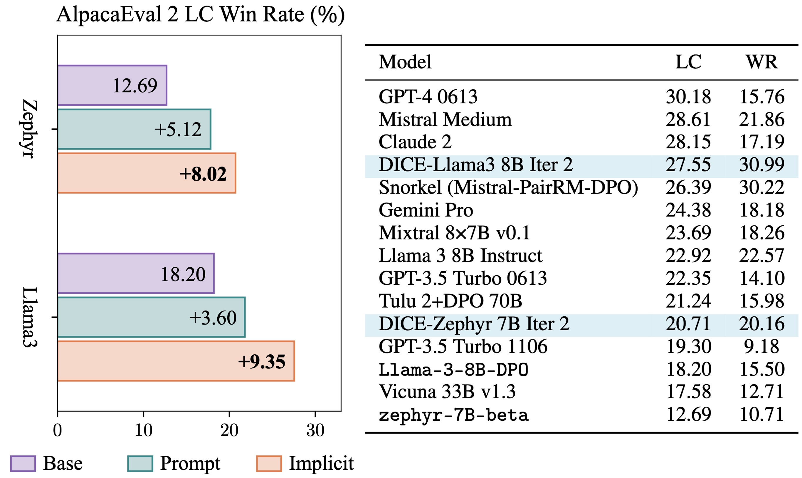
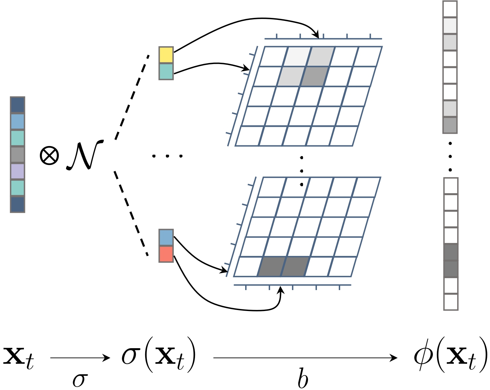

|
Zichen Liu 刘梓辰 liuzc , sea.com | zichen , comp.nus.edu.sg I'm a research engineer at Sea AI Lab, and a CS PhD student at National University of Singapore, advised by Prof. Lee Wee Sun and Dr. Lin Min. I obtained my Bachelor degree in EE from NUS, advised by Dr. Feng Jiashi. I mainly work on reinforcement learning, with a focus on continual learning and its application to LLM reasoning. Google Scholar / Github / Twitter / LinkedIn |
{kind=link}
Publication(Please see the Google Scholar page for the up-to-date paper list) |
|  |
Sample-Efficient Alignment for LLMs
Zichen Liu, Changyu Chen, Chao Du, Wee Sun Lee, Min Lin LanGame @ Advances in Neural Information Processing Systems (NeurIPS) 2024 pdf / code / bibtexThrough the lens of contextual dueling bandits, we propose a principled Thompson sampling algorithm for LLM online exploration, addressing both explore & exploit and best arm identification settings. |
|  |
Bootstrapping Language Models with DPO Implicit Rewards
Changyu Chen*, Zichen Liu*, Chao Du, Tianyu Pang, Qian Liu, Arunesh Sinha, Pradeep Varakantham, Min Lin International Conference on Learning Representations (ICLR) 2025 pdf / code / bibtexA language model trained with DPO provides implicit rewards for self-improvement using online reinforcement learning from AI feedback! |
|  |
Locality Sensitive Sparse Encoding for Learning World Models Online
Zichen Liu, Chao Du, Wee Sun Lee, Min Lin International Conference on Learning Representations (ICLR) 2024 pdf / code / bibtexWe propose to learn world models purely online in the classical Dyna framework, using a linear model on non-linear features (an ELM). Zero forgetting is guaranteed by the linear modeling, making it suitable for continual agents; high-dimensional encoding provides great fitting capacity for complex environments, while its sparsity permits an efficient online update. |
|
Efficient Offline Policy Optimization with a Learned Model
Zichen Liu, Siyi Li, Wee Sun Lee, Shuicheng Yan, Zhongwen Xu International Conference on Learning Representations (ICLR) 2023 pdf / code / bibtexWe investigate the deficiencies of MCTS in the offline MuZero algorithm and propose an efficient regularized improvement operator that achieves better sample- and compute-efficiency on the Atari benchmark. |
|
|
EnvPool: A Highly Parallel Reinforcement Learning Environment Execution Engine
Jiayi Weng, Min Lin, Shengyi Huang, Bo Liu, Denys Makoviichuk, Viktor Makoviychuk, Zichen Liu, Yufan Song, Ting Luo, Yukun Jiang, Zhongwen Xu, Shuicheng Yan Advances in Neural Information Processing Systems (NeurIPS) 2022 pdf / code  /
/ bibtexEnvPool provides ultrafast vectorized environments for RL. It allows solving Atari Pong in 5 minutes using PPO! |
|
|
DANCE: A Deep Attentive Contour Model for Efficient Instance Segmentation
Zichen Liu, Jun Hao Liew, Xiangyu Chen, Jiashi Feng Winter Conference on Applications of Computer Vision (WACV) 2021 pdf / code / bibtexWe develop an efficient instance segmentation strategy based on the neural snake algorithm and attain SoTA performance on COCO among contour-based methods. |
Open-source software |
Model Serving made Efficient in the Cloud (MOSEC)

Mosec is a high-performance ML model serving framework built with a fast Rust web layer. It supports all different ML frameworks, such as Jax, PyTorch, TensorFlow, etc., with a super easy coding interface in Python. Dynamic batching and CPU/GPU pipelines are the core features that can fully exploit your computing machine. |
MiscellaneaI like to play badminton and eat hotpot. |